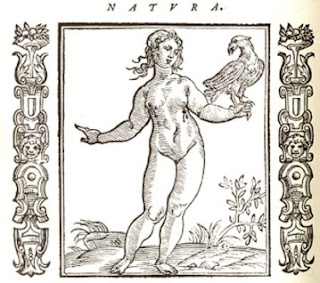

Empress
It is not known whether the tarot deck originally had all 22 of its special cards, or whether they evolved gradually, as the early decks that have survived, all of a “luxury” type, invariably have fewer surviving cards than the 22 we know. Neither the Magician nor the High Priestess has a surviving likeness in the earliest fragmentary tarots, but the Empress does. It appears in both the Visconti Tarot of c. 1441-1444 Milan and a card now in Palermo which was probably part of the so-called “Alessandro Sforza” deck (also called “Urbino” and “Catania” from where these cards now are. This deck was probably done by a Florentine artist, although conceivably one of Ferrara. The date of 1428 can be seen on the paper used to make the card, suggesting a date of the 1430s or perhaps a little later for the card. (1)
The Empress as a subject probably also appeared in a predecessor deck of the tarot called “VIII Imperatori,” recorded in Ferrara of 1423 as bought for a lady there from a Florentine workshop. That deck may have been a regular deck with the four usual suits but with two “Imperator” cards added per suit, an Emperor and Empress paralleling the King and Queen below them. (2)
 The Palermo Empress has as its distinguishing Imperial marks a globe in one hand and a staff tipped with a Fleur-de-Lys. The former signified the Empire’s domination over the whole world, and the latter was an insignia frequently associated with the first Holy Roman Emperor, Charlemagne (and also with the Kingdom of France, not here implied) (3). She is dressed in red and blue, colors traditionally associated with the Virgin Mary. In front of her are two smaller figures: on the left is one in a red robe with hands outstretched in a gesture of welcome to another on the right in a blue robe. If the subject were the Virgin, these would have been angels, traditionally placed within the frame of the picture. The iconography of the Virgin together with the gestures suggests to Emilia Maggio, writing about the card (3):
The Palermo Empress has as its distinguishing Imperial marks a globe in one hand and a staff tipped with a Fleur-de-Lys. The former signified the Empire’s domination over the whole world, and the latter was an insignia frequently associated with the first Holy Roman Emperor, Charlemagne (and also with the Kingdom of France, not here implied) (3). She is dressed in red and blue, colors traditionally associated with the Virgin Mary. In front of her are two smaller figures: on the left is one in a red robe with hands outstretched in a gesture of welcome to another on the right in a blue robe. If the subject were the Virgin, these would have been angels, traditionally placed within the frame of the picture. The iconography of the Virgin together with the gestures suggests to Emilia Maggio, writing about the card (3):Any medieval queen was indeed expected to style herself as Mary Queen of Heaven, displaying the motherly virtues of compassion, clemency and mercy; in fact, the little lady wearing a red robe similar to that of the empress seems to welcome the other figure, who stands in the conventionally submissive pose of a monarch’s dutiful subject. These two figures could therefore personify the qualities proper to the ideal role of an empress.

The Visconti Empress’s staff is a simple stick with no insignia, and she is surrounded by four smaller female attendants, as opposed to the two of the Palermo card. It is possible that these represent four main vassal states of the Empire: Burgundy in the west, Germany in the north, Bohemia in the west, and Italy in the south, and that the Empress herself was meant to bear a resemblance to the wife of Emperor Sigismund, Barbara of Cilli, even if, as Maggio points out, she did not go to Italy for her husband’s coronations, in Milan 1431 as King of Italy (a purely honorific title) and in 1433 as Holy Roman Emperor: a rough likeness was known from her attendance at the Council of Constance.(5)
The next Empress card appears in the Visconti-Sforza deck of the 1450s (below left). She again has the shield on her lap, this time on her right knee instead of her left (6). There are no attendants. One of her gloves is green; this is a color that naturally symbolizes the fecundity of spring, the time of new birth. The court figures in the Visconti-Sforza deck’s suit of Bastoni, i.e. staves (corresponding to Wands today) also wear green gloves or sleeves, as does the woman on the Love card. (7) Again her fecundity is suggested. Bianca Maria bore her husband nine children. There may also be some symbolic relationship to the lyrics of the song “Greensleeves,” which although of 16th century England is said to conform stylistically to Italian poetic conventions. (8)
As Empress, she would have been thought, like the Virgin Mary, to embody and model for others all the maternal virtues. The most important of these, one that the Virgin possessed only in a spiritual sense, was that of continuing the paternal line, so as to ensure the continuity of the Empire in the hands of his family. People then would have noticed the resemblance to the Madonna and Child in religious art, but with the shield and its eagle, instead of the infant Jesus. The eagle, among its many meanings, was an early symbol of the saints and Christ. Andrea Vitali in an essay on this card cites the 5th century Liber formularum spiritalis intelligentiae of Saint Eucherius of Lyon (11):
The Eagles are the saints; in the Gospel (Matt. 24:28) it is written: ‘Wherever there is a corpse, here the eagles will be assembled’. Because the holy souls, when they go out of the body, meet Christ, who dying became himself a corpse for them. The eagle also means Christ, as in Solomon (Proverbs 30:19), that is, the ascension of Christ."The eagle-shield on the Empress’s lap thus mimics the Christ-child on the lap of the Virgin.
In 1789 Etteilla put out the first tarot deck designed especially for divination. Although he had claimed, following Court de Gebelin in 1781, that the tarot was originally Egyptian and that his deck restored the original designs, the imagery actually has little in it that corresponds to the art of ancient Egypt or suggests ancient Egyptian culture in particular. (14)
In keeping with the ideals of the French Revolution, in fact, he removed all four of the cards associated with the ancien regime (but surely would have existed in some form in Egypt): Empress, Emperor, Popess and Pope, declaring them not to be part of the original Egyptian “book of Thoth”. He said that
 each of two new cards replaced “an Emperor.” One was for Night and Day, and showed the stars, planets, and the sun. The other showed odd creatures in the air and in the water, with a snake on land, its title was “appui”, meaning “purpose” (15).
each of two new cards replaced “an Emperor.” One was for Night and Day, and showed the stars, planets, and the sun. The other showed odd creatures in the air and in the water, with a snake on land, its title was “appui”, meaning “purpose” (15).The astronomical and biological entities depicted on these cards are probably irrelevant for our study. However the keywords are a different story, the ones on card 6 for the Empress and card 7 for the Emperor (the latter to be discussed in a later post). Besides the two keywords, Etteilla's followers constructed at least two lists supplementing the keywords. I have discussed some of the "Night" entries in relation to the Popess; now I want to focus on their conrast with the entries for "Day." Since there is much overlap, I have combined the two lists, with those in one list and not the other either in bold (in"Julia Orisini," 1838) or italics (in Papus, trans. Stockman, 1909) (16):
6. Upright: NIGHT—Obscurity, Darkness, Lack of Light, Night Scene [Fr. Nocturnal], Mystery, Secret, Mask, Hidden, Unknown, Clandestine, Occult. Eclipse.—Veil, Symbol, Figure, Image, Parable, Allegory, Mystic Fire, Veiled Purpose, Mystic Meaning, Mysterious words, Obscure discourse, Occult Science.—Hidden Machinations, Mysterious Intervention, Clandestine Actions, In secret, Clandestinely, Derision.—Blindness, Confused, Entangle, Cover, Wrap , Forget, Forgotten, Difficulty, Doubt, Ignorance.It seems to me that Etteilla may have combined, thanks to his "upright" and "reversed" meanings, associations to two cards in previous cartomancy, namely the Popess and the Empress. For "night" we have the theme of the "veil" and secret knowledge. That would be the veil that de Gebelin had seen on the Popess, or High Priestess, as he called the card. For "Day" we then have the revealing of what was hidden, "Isis Unveiled," as it were--or the pregnant Virgin now the Madonna.
Reversed: DAY. Clarity, Light, Brilliance, Splendor, Illumination,Manifestation, Evidence, Truth.—Clear, Visible, Luminous, Bring into Being, Bring to Light, Publish, Make Appear.—Pierce, Make a Way for Oneself, Clearing (or Clarification: s'eclairer), Acquire Knowledge.—Public Joys, Fireworks.—Expedient, Easiness.—Opening Up, Window, Gap, Zodiac.
Etteilla's innovations did not go unchallenged, even by occultists. Starting with Eliphas Levi, they went back to the traditional imagery of the Tarot of Marseille--with a few changes--although retaining, in many cases, Etteilla's interpretations. Calling the card the Empress, Levi described her as “a winged woman, crowned, sitting and holding the world at the end of her scepter; she has as a sign the eagle, “image of the soul and of life” (17). She was “Venus-Urania” of the Greeks (here “Urania” is Greek for “heaven”) and the “woman clothed with the sun” of the Book of Revelation. She was also “queen of heaven,” no doubt referring to the same woman as the Virgin assumed into heaven.
 Levi' student Paul Christian saw her as “Isis-Urania,” thus Egyptianizing Levi’s “Venus-Urania” (18). Venus, after all, was one of the goddesses subsumed by Isis in her Roman cult, as described by Apuleius in his novel Metamorphoses (known popularly as The Golden Ass) (19). Astrologically, however, he kept the identification with Venus. Christian also identified her with “Nature in labor” and “the germination of the acts that are to spring from the Will”, in other words “Action”, and the scepter with a globe on the end a sign of “her perpetual activity over things born and unborn.” “Will” here is apparently to be understood in the manner of Schopenhauer, as a driving force within all things, nature as well as humanity, driving things and people to unfold in material form according to a preconceived plan, either in the mind of God, in his Wisdom, or the mind of the person concerned. After the Will to manifest and the knowledge received by consciousness, it is the act of applying the combination of the two in the world.
Levi' student Paul Christian saw her as “Isis-Urania,” thus Egyptianizing Levi’s “Venus-Urania” (18). Venus, after all, was one of the goddesses subsumed by Isis in her Roman cult, as described by Apuleius in his novel Metamorphoses (known popularly as The Golden Ass) (19). Astrologically, however, he kept the identification with Venus. Christian also identified her with “Nature in labor” and “the germination of the acts that are to spring from the Will”, in other words “Action”, and the scepter with a globe on the end a sign of “her perpetual activity over things born and unborn.” “Will” here is apparently to be understood in the manner of Schopenhauer, as a driving force within all things, nature as well as humanity, driving things and people to unfold in material form according to a preconceived plan, either in the mind of God, in his Wisdom, or the mind of the person concerned. After the Will to manifest and the knowledge received by consciousness, it is the act of applying the combination of the two in the world. The eagle no longer is on a shield but rather “on her other hand” as opposed to that with the scepter; it is the “symbol of the heights to which the Spirit may soar.” Accordingly, when Christian's description was converted to an actual card by Maurice Wegener and Robert Falconnier in 1896. it is an actual bird, hovering in the air above the hand of "Isis-Urania." (20)
This interpretation of the eagle is not new. and If some in the Renaissance associated the eagle of the shield with Horus on the lap of Isis in Roman-era coins, this Egyptian interpretation is not new. It is just that the eagle is set free from its shield, to better represent the soaring spirit.
Twenty years later Papus elaborated further on the conceptions of Levi and Christian. Keeping the identification with Venus, he added, albeit without comment, that of the Kabbalist Tree of Life's Binah. In his exposition he explained that the Empress represents the mystery by which the spirit unites itself to matter, by which the Divine becomes Human. This is not just the birth of Christ from the Virgin. It is “the ideas of generation, of embodiment in all the worlds,” including “how the human being becomes corporeal in the womb of a woman” (21). That she has wings shows that she represents “the idea of the spirituality of the vivifying principle of all Beings.” Moreover the card expresses the combination of Osiris and Isis, the equilibrium represented by Horus, the son of Isis and Osiris, and of the Father and the Son in the Holy Spirit.. It is also humanity, the equilibrium of Adam and Eve, and in the universe, “the world, conceived as a Being.” (22)
 Oswald Wirth, in the illustration he made for Papus’s 1889 book, which was also made into a card (the very similar 1927 version is at right), included references to Revelation 12:1, the verse that declared, “A woman clothed with the sun appeared in the sky, with the moon under her feet and a crown of twelve stars on her head." As in medieval depictions of her, for example the one at left above, from 1330 Normandy (23), his Empress has 12 stars around her head and a crescent moon under her foot. That its horns point downward instead of upward as was traditional suggests the downward movement of spirit.
Oswald Wirth, in the illustration he made for Papus’s 1889 book, which was also made into a card (the very similar 1927 version is at right), included references to Revelation 12:1, the verse that declared, “A woman clothed with the sun appeared in the sky, with the moon under her feet and a crown of twelve stars on her head." As in medieval depictions of her, for example the one at left above, from 1330 Normandy (23), his Empress has 12 stars around her head and a crescent moon under her foot. That its horns point downward instead of upward as was traditional suggests the downward movement of spirit.
Wirth, writing in is own book of 1927, like Papus also related her to the Kabbalists’ third sefiroth, Binah. Binah in Kabbalah is the third sefira, and means "Understanding" or "Intelligence" in Hebrew, and also is the "mother with seven children," meaning the seven sefiroth below Binah. (25) .In that spirit Wirth calls the Empress “Creative Intelligence, mother of form, pictures, and ideas” (26). If the Magician signifies Intent and the High Priestess an idea not yet in consciousness, the Empress seems to be the idea in application to the world. This is consonant with the identification of the Magician with God the Father, who creates the ideal archetypes, the Popess as the Virgin pregnant with Jesus, the earthly representative of those ideals and the Empress as manifesting the Ideal in an immature realization, i.e. the Christ child. Wirth also calls her “discernment, reflection, study, observation, inductive science, Instruction, knowledge, erudition.” However she is also, as Empress, the epitome of “grace, charm, gentleness, rule through goodness, and so on. Negatively, Wirth declared, she stands for superficiality. (27)
Waite also called the Empress card “the door to the garden of Venus” and “the inferior Garden of Eden, the Earthly Paradise, all that is symbolized by the visible house of man” (30). This interpretation seems inspired by Etteilla’s card of the female enquirer, which showed a woman with eleven circles around her, (11 was for Etteilla the number of sin) in an Eden-like setting, above right (31). If so, perhaps the Empress, in a deck with that card, can also serve to represent the female enquirer in a reading, or the female participant in an initiatory process through the cards, faced indeed with "confusion."
In a sense, Waite's lush natural surroundings make up for the lack of an eagle on the Empress's shield. By some, large birds in themselves signified nature. The bird wasn't an eagle, however, but a vulture. Leon Alberti says, in his treatise on architecture, "The Egyptians employed the following sign language: a god was represented by an eye, nature by a vulture...". His source was a text by the Roman general Ammianus.(32) Then in 1499 the Hypnerotomachia (Strife of Love in a Dream) also implied that a vulture represents nature, in its translation of a "hieroglyphic" inscription that the protagonist Porphilo sees. It shows, for its second image, an altar with, 'on its face, the images of an eye and a vulture" (33). The second phrase of the "translation" reads "...to the god of nature..." At left I have reproduced the first line of the hieroglyphs and put under it the first line of what the novel says is their translation into Latin. The first hieroglyph is translated as "from your labors"; the second is "god of nature" followed by "freely" and "sacrifice" (the urn). The word order follows that of ordinary Latin.
After that, Ripa's image of nature is of a naked woman holding a bird. It is on her left side, like the Empress's shield. Ripa says, in the first English translation (34):

She is naked, to denote the Principle of Nature, that is active or Form, and passive or Matter. The turgid Breasts denote the Form, because it maintains created Things; the Vultur, a ravenous Fowl, the Matter; which being alter'd and moved by the Form, destroys all corruptible Bodies.In such manner the vulture is associated with nature, and thence to Isis, as the eminent French historian of esotericism Pierre Hadot has argued (35).
The Golden Dawn, as well as its successors in the English-speaking world, identified the Empress with a path on the Tree of Life rather than, as with Papus, one of its sefiroth. Specifically, she was the path between Binah and Hochmah, associated with the letter Daleth, meaning "door" (36). As such, for someone “working the paths” upward, she would have been the door to the hidden truths of Hochmah.
Perhaps influenced by his study of the Kabbalah, Waite saw the Empress as both the entrance to life and the exit from this world. (37) That might also be interpreted figuratively as the materialization of an idea and the abstraction from materializations (Wirth’s “inductive science”). This conception could apply equally to the sefira Binah, because the Kabbalists also saw Binah as the mother of souls, and “the great jubilee” of souls' return to their source (38). However it depends on where one puts the "entrance to life". If "life" is defined in the sense of material life, both Binah and Hochmah are in the "supernal triangle" above the material universe. To exit from the world is in that case to enter Binah. On the other hand, the transition between Binah and Chochmah could be seen as an exit from life as well, to the extent that Binah is the seifra of life and the spirit of nature.

By contrast with the High Priestess, 'who is a cold, virgin figure corresponding to the Moon, the Empress is warm and maternal. She is the Great Mother, pregnant with the world of form. In this figure all the mother goddesses of the ancient world are synthesized, but she is particularly Aphrodite, or Venus.Although the High Priestess is her basis, represented by the Moon at her feet, she also receives input from above, as indicated by the 12 stars around her head (10-4). It is his version of the impregnation of matter by spirit. She also represents the exercise of imagination, which is manifested in "the arts, fine and useful" and as shown by the richly ornamented seat, in contrast to the "severe cube' of the Priestess (10-5). Instead of Waite's astrological sign for Venus on her shield, which Case puts on her scepter, Case has a dove, which besides being sacred to Venus represents the Holy Spirit in the esoteric meaning of that symbol (10-4). "It is in the uniting of the Father with the Son that the Holy Spirit realizes itself."
The Jungian Turn
For Sallie Nichols in Jung and Tarot, the empress personifies the Mother archetype, in both its personal and cosmic manifestations. Jung and his followers wrote a lot about this archetype, for example Erich Neumann's The Great Mother. Applied to the tarot, Nichols has a nice set of contrasts between her and the High Priestess (40):
The Popess is High Priestess and Virgin; the Empress is Madonna and Royal Queen.Nichols does not apply Jung's four-stage model of anima development. However the Empress would seem to fit mostly its first two forms, that of Eve and Helen of Troy (41), as opposed to Mary and Sophia. Jung characterized the first as "the personification of a purely instinctual relationship" He goes on to say:
The Popess is patience and passive waiting; the Empress is action and completion.
The Popess is ruled by love, the Empress rules by love.
'The Popess guards something old; the Empress reveals something new.
In short, the Popess holds the book of prophecy, and the Empress enacts and fulfills this prophecy. The book is no longer needed, for the new King is born.
The first stage - Hawwah, Eve, earth - is purely biological; woman is equated with mother, and only represents something to be fertilized.Presumably with the widespread acceptance of contraception, she is not only "something to be fertilized" but also includes relationships that without contraception might end with fertilization.
About Helen, she, too, "is an anima figure." Moreover:
The second stage is still dominated by sexual Eros, but on an aesthetic and romantic where woman has already acquired some value as an individual.Presumably the "aesthetic" level includes not only beauty of the body but also, or more importantly, of the soul; it is the union of souls that romantic love is about.
In actual practice Empresses were mostly of the first type, namely the mother of the Emperor's heir, and otherwise a business relationship designed to ensure the peace or gain territory, money, or allies. The same was true for dukes and counts. However the attraction of souls together with sexual allure was not excluded. Both, moreover, had the potential, as an inner figure projected onto another, to lead a person toward a deeper understanding of the unconscious aspects of the personality.
Marriage, even if entered into for biological reasons, is an opportunity for learning about one's shadow, which one's partner will know well. It also has shadow aspects of its own, as temptress and captor of the masculine hero. Romantic love also has the potential to deepen into an encounter with the Self, if it can get beyond the puer and puella aeternis (eternal boy and girl) stage which sees mainly the shadow aspect of the Mother archetype, that of "Devouring Mother" and Mother as biological destiny, both of which seen as a form of soul-death.

Sometimes she is pictured as a dragon, guarding that indispensable treasure, the "pearl of great price." As such, she represents the devouring, aggressive unconscious nature which the Hero (symbolic humanity striving for consciousness) must slay in order to obtain the peal of wisdom transcending mere animal existence. Another familiar representation of the Terrible Mother aspect is Kali, the bloodthirsty wife of Shiva.... The devouring aspect of the goddess becomes apparent whenever woman neglects her true kingdom, which is relationship, and becomes power-hungry.On the side of Hinduism, it must be pointed out that this is only one aspect of Kali, who has more positive features. Another example, also with more positive aspects, is the Egyptian goddess Sekhmet, the lioness goddess whose blood-lust almost destroys humanity, until Ra gets her drunk with beer.. In Babylonia, there was Tiamat, goddess of chaos, who took the form of a dragon..In Greece, to be fair, dragons guarding treasure were usually male or of unspecified gender. However there was also Eris, goddess of strife, discord, contention, and rivalry, famous for throwing out the golden apple which led to the Trojan War. (43).
There is also such a thing as too much of the unconscious aspect of the Empress (44):
Another empress type can swamp us, submerging our individuality in the saccharin sweetness of her unconscious lure. For example, Waite's boxom blond pictured with her couch and shield suggests this kind of Wagnerian music. One can almost hear the Venusberg music welling up from the pit to submerge and drown us, pulling us back into the womb. This tendency to smother-love is sometimes characteristic of the modern Empress type, especially in her role as Mom. It also appears in other areas, where the charm of such a woman can lure us into her realm in such a subtle way that we don't realize what's happened.At the other extreme, there is the neglectful mother, who justifies her neglect by saying that one must stand on one's own two feet, and that if the child cries it is just a "sissy."
In a modern alchemical interpretation, Robert Place declared the Empress to symbolize the element of Earth, whose separation as one of the four elements is achieved through dissolution of the original Prima Materia; she is also the vessel in which the Philosopher’s Stone will be created. (45)
Conclusion
The meaning of the card throughout its history can be summed up as "the materialization of spirit”, or “giving birth”, with all the associations that the agents of such an action may take, and also the reverse of that activity, ascent to non-material form, ready once more to be hidden from view. Such a role requires also the taking of female authority. The figure also conveys a sense of the maternal virtues of care, compassion, and selfless love, as well as the relatively non-maternal value of female authority.
The overlay of the Kabbalist "Tree of the Sefiroth" onto the cards adds a complexity that is sometimes with other meanings of the card, namely, that of seeing her in terms of Understanding in a discursive, analytical sense. The idea would seem to be that the Empress, as the Virgin giving birth to what was previously hidden inside her, is like making explicit what was implicit in the words of an allegorical text..Jung called this the "Logos" aspect of consciousness, rational analysis. On the other hand, a mother's relationship to her child is a form of Eros, love, and the way in which women traditionally exercised power was in virtue of their relationships to others, as regents until their son attained maturity, or as a symbol of peace between two families or nations. Similarly, in Jungian theory it is in fact not possible to analyze a symbol by saying "what it stands for", but rather only "circumambulate" the symbol, that is give other images and stories that are related to the first, in other words, a kind of analysis by Eros rather than Logos.